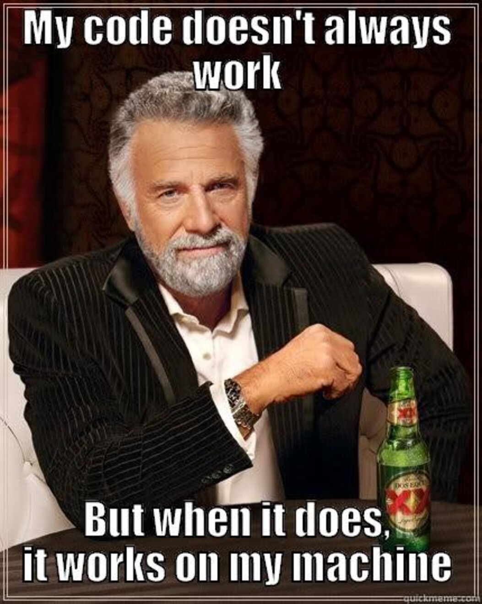
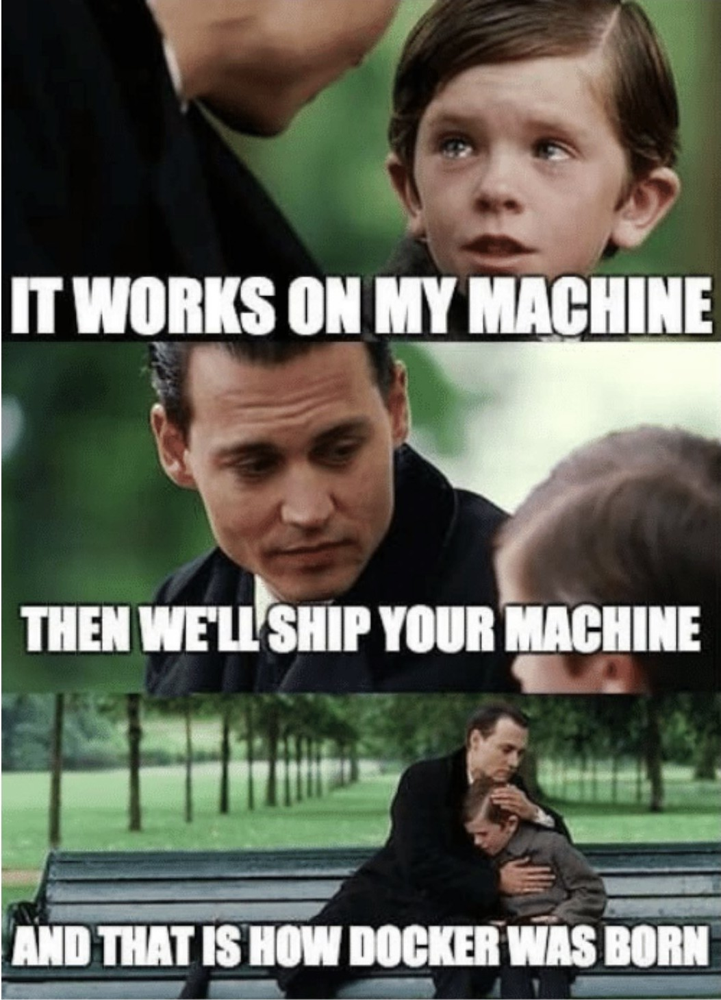
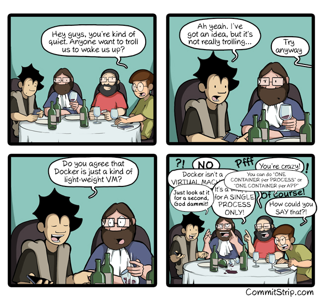
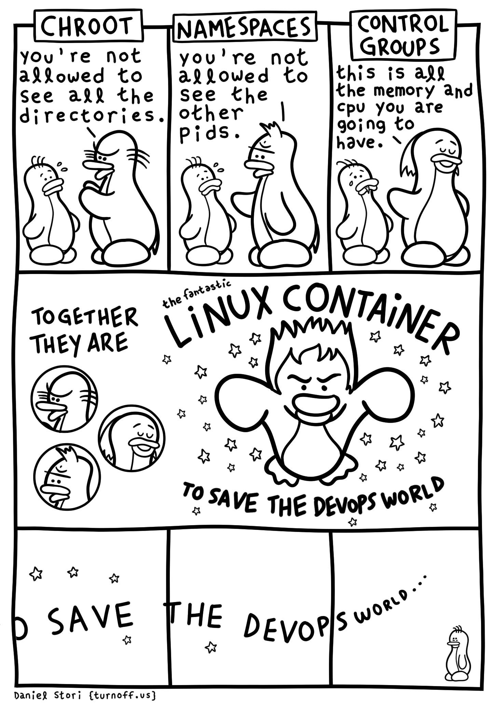

Software Engineering
Continuous Integration and Containerization
Danilo Pianini
2024-02-12Continuous Integration
The practice of integrating code with a main development line continuously
Verifying that the build remains intact
- Requires build automation to be in place
- Requires testing to be in place
- Pivot point of the DevOps practices
- Historically introduced by the extreme programming (XP) community
- Now widespread in the larger DevOps community
The Integration Hell
- Traditional software development takes several months for “integrating” a couple of years of development
- The longer there is no integrated project, the higher the risk
 $\Rightarrow$
$\Rightarrow$

Microreleases and protoduction
- High frequency integration may lead to high frequency releases
- Possibly, one per commit
- Of course, versioning must be appropriate…
Traditionally, protoduction is jargon for a prototype that ends up in production

|
|
Intensive operations should be elsewhere
- The build process should be rich and fast
- Operations requiring a long time should be automated
- And run somewhere else than devs’ PCs

Continuous integration software
Software that promotes CI practices should:
- Provide clean environments for compilation/testing
- Provide a wide range of environments
- Matching the relevant specifications of the actual targets
- High degree of configurability
- Possibly, declarative configuration
- A notification system to alert about failures or issues
- Support for authentication and deployment to external services
Plenty of integrators on the market
Circle CI, Travis CI, Werker, done.io, Codefresh, Codeship, Bitbucket Pipelines, GitHub Actions, GitLab CI/CD Pipelines, JetBrains TeamCity…
We will use GitHub actions: GitHub integration, free for FOSS, multi-os OSs supported
Core concepts
Naming and organization is variable across platforms, but in general:
- One or more pipelines can be associated to events
- For instance, a new commit, an update to a pull request, or a timeout
- Every pipeline is composed of a sequence of operations
- Every operation could be composed of sequential or parallel sub-operations
- How many hierarchical levels are available depends on the specific platform
- GitHub Actions: workflow $\Rightarrow$ job $\Rightarrow$ step
- Travis CI: build $\Rightarrow$ stage $\Rightarrow$ job $\Rightarrow$ phase
- Execution happens in a fresh system (virtual machine or container)
- Often containers inside virtual machines
- The specific point of the hierarchy at which the VM/container is spawned depends on the CI platform
Pipeline design
In essence, designing a CI system is designing a software construction, verification, and delivery pipeline with the abstractions provided by the selected provider.
- Think of all the operations required starting from one or more blank VMs
- OS configuration
- Software installation
- Project checkout
- Compilation
- Testing
- Secrets configuration
- Delivery
- …
- Organize them in a dependency graph
- Model the graph with the provided CI tooling
Configuration can grow complex, and is usually stored in a YAML file
(but there are exceptions, JetBrains TeamCity uses a Kotlin DSL).
GitHub Actions: Structure
- Workflows react to events, launching jobs
- Multiple workflows run in parallel, unless explicitly restricted
- Jobs of the same workflow run a sequence of steps
- Multiple jobs run in parallel, unless a dependency among them is explicitly declared
- Concurrency limits can be imposed across workflows
- They can communicate via outputs
- Steps of the same job run sequentially
- They can communicate via outputs
GitHub Actions: Configuration
Workflows are configured in YAML files located in the default branch of the repository in the .github/workflows folder.
One configuration file $\Rightarrow$ one workflow
For security reasons, workflows may need to get manually activated in the Actions tab of the GitHub web interface.
GitHub Actions: Runners
Executors of GitHub actions are called runners: virtual machines (hosted by GitHub) with the GitHub Actions runner application installed.
Note: the GitHub Actions application is open source and can be installed locally, creating “self-hosted runners”. Self-hosted and GitHub-hosted runners can work together.
Upon their creation, runners have a default environment, which depends on their operating system
Convention over configuration
Several CI systems inherit the “convention over configuration” principle.
For instance, by default (with an empty configuration file) Travis CI builds a Ruby project using rake.
GitHub actions does not adhere to the principle: if left unconfigured, the runner does nothing (it does not even clone the repository locally).
Probable reason: Actions is an all-round repository automation system for GitHub, not just a “plain” CI/CD pipeline
$\Rightarrow$ It can react to many different events, not just changes to the git repository history
GHA: basic workflow structure
Minimal, simplified workflow structure:
# Mandatory workflow name
name: Workflow Name
on: # Events that trigger the workflow
jobs: # Jobs composing the workflow, each one will run on a different runner
Job-Name: # Every job must be named
# The type of runner executing the job, usually the OS
runs-on: runner-name
steps: # A list of commands, or "actions"
- # first step
- # second step
Another-Job: # This one runs in parallel with Job-Name
runs-on: '...'
steps: [ ... ]
DRY with YAML
We discussed that automation / integration pipelines are part of the software
- They are subject to the same (or even higher) quality standards
- All the good engineering principles apply!
YAML is often used by CI integrators as preferred configuration language as it enables some form of DRY:
- Anchors (
&/*) - Merge keys (
<<:)
hey: &ref
look: at
me: [ "I'm", 'dancing' ]
merged:
foo: *ref
<<: *ref
look: to
Same as:
hey: { look: at, me: [ "I'm", 'dancing' ] }
merged: { foo: { look: at, me: [ "I'm", 'dancing' ] }, look: to, me: [ "I'm", 'dancing' ] }
GitHub Actions’ actions
GHA’s YAML parser does not support standard YAML anchors and merge keys
(it is a well-known limit with an issue report open since ages)
GHA achieves reuse via:
- “actions”: reusable parameterizable steps
- JavaScript (working on any OS)
- Docker container-based (linux only)
- Composite (assemblage of other actions)
- “reusable workflows”: reusable and parameterizable jobs
Many actions are provided by GitHub directly, and many are developed by the community.
Workflow minimal example
# This is a basic workflow to help you get started with Actions
name: Example workflow
# Controls when the workflow will run
on:
push:
tags: '*'
branches-ignore: # Pushes on these branches won't start a build
- 'autodelivery**'
- 'bump-**'
- 'renovate/**'
paths-ignore: # Pushes that change only these file won't start the workflow
- 'README.md'
- 'CHANGELOG.md'
- 'LICENSE'
pull_request:
branches: # Only pull requests based on these branches will start the workflow
- master
# Allows you to run this workflow manually from the Actions tab
workflow_dispatch:Workflow minimal example
# A workflow run is made up of one or more jobs that can run sequentially or in parallel
jobs:
# This workflow contains a single job called "build"
Default-Example:
# The type of runner that the job will run on
runs-on: macos-latest
# Steps represent a sequence of tasks that will be executed as part of the job
steps:
# Checks-out your repository under $GITHUB_WORKSPACE, so your job can access it
- uses: actions/checkout@b4ffde65f46336ab88eb53be808477a3936bae11
# Runs a single command using the runners shell
- name: Run a one-line script
run: echo Hello from a ${{ runner.os }} machine!
# Runs a set of commands using the runners shell
- name: Run a multi-line script
run: |
echo Add other actions to build,
echo test, and deploy your project. Workflow minimal example
Explore-GitHub-Actions:
runs-on: ubuntu-latest
steps:
- run: echo "🎉 The job was automatically triggered by a ${{ github.event_name }} event."
- run: echo "🐧 This job is now running on a ${{ runner.os }} server hosted by GitHub!"
- run: echo "🔎 The name of your branch is ${{ github.ref }} and your repository is ${{ github.repository }}."
- name: Check out repository code
uses: actions/checkout@v4
- run: echo "💡 The ${{ github.repository }} repository has been cloned to the runner."
- run: echo "🖥️ The workflow is now ready to test your code on the runner."
- name: List files in the repository
run: ls ${{ github.workspace }}
- run: echo "🍏 This job's status is ${{ job.status }}."
# Steps can be executed conditionally
- name: Skipped conditional step
if: runner.os == 'Windows'
run: echo this step won't run, it has been excluded!
- run: |
echo This is
echo a multi-line
echo script. Workflow minimal example
Conclusion:
runs-on: windows-latest
# Jobs may require other jobs
needs: [ Default-Example, Explore-GitHub-Actions ]
# Typically, steps that follow failed steps won't execute.
# However, this behavior can be changed by using the built-in function "always()"
if: always()
steps:
- name: Run something on powershell
run: echo By default, ${{ runner.os }} runners execute with powershell
- name: Run something on bash
shell: bash
run: echo However, it is allowed to force the shell type and there is a bash available for ${{ runner.os }} too.
Checking out the repository
By default, GitHub actions’ runners do not check out the repository
- Actions may not need to access the code
- e.g., Actions automating issues, projects
It is a common and non-trivial operation (the checked out version must be the version originating the workflow), thus GitHub provides an action:
- name: Check out repository code
uses: actions/checkout@v4Since actions typically do not need the entire history of the project, by default the action checks out only the commit that originated the workflow (--depth=1 when cloning)
- Shallow cloning has better performance
- $\Rightarrow$ It may break operations that rely on the entire history!
- e.g., the git-sensitive semantic versioning system
Also, tags don’t get checked out
Writing outputs
Communication with the runner happens via workflow commands
The simplest way to create outputs for actions is to print on standard output a message in the form:
"{name}={value}"
and redirect it to the end of the file stored in the $GITHUB_OUTPUT environment variable:
echo "{name}={value}" >> $GITHUB_OUTPUT
jobs:
Build:
runs-on: ubuntu-latest
steps:
- name: Checkout
uses: danysk/action-checkout@0.2.14
- id: branch-name # Custom id
uses: tj-actions/branch-names@v8
- id: output-from-shell
run: ruby -e 'puts "dice=#{rand(1..6)}"' >> $GITHUB_OUTPUT
- run: |
echo "The dice roll resulted in number ${{ steps.output-from-shell.outputs.dice }}"
if ${{ steps.branch-name.outputs.is_tag }} ; then
echo "This is tag ${{ steps.branch-name.outputs.tag }}"
else
echo "This is branch ${{ steps.branch-name.outputs.current_branch }}"
echo "Is this branch the default one? ${{ steps.branch-name.outputs.is_default }}"
fi
Build matrix
Most software products are meant to be portable
- Across operating systems
- Across different frameworks and languages
- Across runtime configuration
A good continuous integration pipeline should test all the supported combinations*
- or a sample, if the performance is otherwise unbearable
The solution is the adoption of a build matrix
- Build variables and their allowed values are specified
- The CI integrator generates the cartesian product of the variable values, and launches a build for each!
- Note: there is no built-in feature to exclude some combination
- It must be done manually using
ifconditionals
- It must be done manually using
Build matrix in GHA
jobs:
Build:
strategy:
matrix:
os: [windows, macos, ubuntu]
jvm_version: [8, 11, 15, 16] # Arbitrarily-made and arbitrarily-valued variables
ruby_version: [2.7, 3.0]
python_version: [3.7, 3.9.12]
runs-on: ${{ matrix.os }}-latest ## The string is computed interpolating a variable value
steps:
- uses: actions/setup-java@v4
with:
distribution: 'adopt'
java-version: ${{ matrix.jvm_version }} # "${{ }}" contents are interpreted by the github actions runner
- uses: actions/setup-python@v5
with:
python-version: ${{ matrix.python_version }}
- uses: ruby/setup-ruby@v1
with:
ruby-version: ${{ matrix.ruby_version }}
- shell: bash
run: java -version
- shell: bash
run: ruby --version
- shell: bash
run: python --version
Private data and continuous integration
We would like the CI to be able to
- Sign our artifacts
- Delivery/Deploy our artifacts on remote targets
Both operations require private information to be shared
Of course, private data can’t be shared
- Attackers may steal the identity
- Attackers may compromise deployments
- In case of open projects, attackers may exploit pull requests!
- Fork your project (which has e.g. a secret environment variable)
- Print the value of the secret (e.g. with
printenv)
How to share a secret with the build environment?
Secrets
Secrets can be stored in GitHub at the repository or organization level.
GitHub Actions can access these secrets from the context:
- Using the
secrets.<secret name>context object - Access is allowed only for workflows generated by local events
- Namely, no secrets for pull requests
Secrets can be added from the web interface (for mice lovers), or via the GitHub API.
#!/usr/bin/env ruby
require 'rubygems'
require 'bundler/setup'
require 'octokit'
require 'rbnacl'
repo_slug, name, value = ARGV
client = Octokit::Client.new(:access_token => 'access_token_from_github')
pubkey = client.get_public_key(repo_slug)
key = Base64.decode64(pubkey.key)
sodium_box = RbNaCl::Boxes::Sealed.from_public_key(key)
encrypted_value = Base64.strict_encode64(sodium_box.encrypt(value))
payload = { 'key_id' => pubkey.key_id, 'encrypted_value' => encrypted_value }
client.create_or_update_secret(repo_slug, name, payload)
Stale builds
- Stuff works
- Nobody touches it for months
- Untouched stuff is now borked!
- Connected to the issue of build reproducibility
- The higher the build reproducibility, the higher its robustness
- The default runner configuration may change
- Some tools may become unavailable
- Some dependencies may get unavailable
The sooner the issue is known, the better
$\Rightarrow$ Automatically run the build every some time even if nobody touches the project
- How often? Depends on the project…
- Warning: GitHub Actions disables
cronCI jobs if there is no action on the repository, which makes the mechanism less useful
Additional checks and reportings
There exist a number of recommended services that provide additional QA and reports.
Non exhaustive list:
- Codecov.io
- Code coverage
- Supports Jacoco XML reports
- Nice data reporting system
- Sonarcloud
- Multiple measures, covering reliability, security, maintainability, duplication, complexity…
- Codacy
- Automated software QA for several languages
- Code Factor
- Automated software QA
High quality FLOSS checklist
The Linux Foundation Core Infrastructure Initiative created a checklist for high quality FLOSS.
CII Best Practices Badge Program https://bestpractices.coreinfrastructure.org/en
- Self-certification: no need for bureaucracy
- Provides a nice TODO list for a high quality product
- Releases a badge that can be added e.g. to the project homepage
Automated evolution
A full-fledged CI system allows reasonably safe automated evolution of software
At least, in terms of dependency updates
Assuming that you can effectively intercept issues, here is a possible workflow for automatic dependency updates:
- Check if there are new updates
- Apply the update in a new branch
- Open a pull request
- Verify if changes break anything
- If they do, manual intervention is required
- Merge
Automated evolution
Bots performing the aforementioned process for a variety of build systems exist.
They are usually integrated with the repository hosting provider
- Whitesource Renovate (Multiple)
- Also updates github actions and Gradle Catalogs
- Dependabot (Multiple)
- Gemnasium (Ruby)
- Greenkeeper (NPM)
Containers
Runtime isolation without operating system replication
Why containers?
 
Lightweight virtual machines?
More similar to well-confined processes
Docker
Docker is a containerization platform
Standard de-facto in industry
Base concepts
- Image
- a read-only template with instructions for creating a Docker container
- images can get built upon other images
- images are made of a stack of layers
- Container
- a runnable instance of an image
- namely, a “writable layer” atop an image
- Service
- A software component in charge of running one or multiple containers
Docker architecture
- Registry: repository of images
- Daemon: service pulling images from registries and instancing containers
- Client: interface towards the daemon

Running docker containers
- Install docker
- Add your user to the
dockergroup - Enable the docker service (on most Linux distributions
systemctl start docker) - Pull an image:
docker pull adoptopenjdk - Run a container!
docker run adoptopenjdk
Every container provides a default command, running without options runs such default in a non-interactive terminal.
Running in interactive mode can be achieved with the -i option
Running a custom command can be achieved with writing the command after the image name
- e.g.,
docker run -i adoptopenjdk bash - parameters for the custom command can follow
- use the
toption to run in a pseudo-tty - use the
--rmto remove the container after use
Interaction with the outside world
A docker container runs in isolation.
Environment variables, network ports, and file system folders are not shared.
Sharing must be explicit and requires options to be specified
- Passing environment variables:
-e <name>=<value> - Mounting volumes:
-v <host>:<guest>:<options><host>is the path on the host system<guest>is the location where it will be mounted on the guest<options>can be optionally specified as mount options (e.g.,rw,ro)
- Publishing ports:
-p <host>:<guest><host>is the port on the host system<guest>is the corresponding port on the container
Managing images
Every image has a unique ID, and may have an associated tag
The subcommand images lists the pulled images and their associated information
The subcommand image allows for running maintenance tasks, e.g.
docker image ls– same asdocker imagesdocker image prune– removes unused imagesdocker image rm– removes images by namedocker image tag– associates a tag to an image
Creating docker images
Docker images are written in a Dockerfile
Every command inside a Dockerfile generates a new layer
The final stack of layers creates the final image
The docker build command interprets the Dockerfile commands to produce a sequence of layers
Changes to a layer do not invalidate previous layers
Dockerfile syntax
# Pulls an image from docker hub with this name. Alternatively, "scratch" can be used for an empty container
FROM manjarolinux/base
# Runs a command
RUN pacman -Sy --noconfirm gnupg archlinux-keyring manjaro-keyring
# Copies a file from the local folder into the image
COPY makepkg.conf /etc/makepkg.conf
# Adds a new environment variable
ENV GEM_HOME=/rubygems/bin
# Configures the default command to execute
CMD bash
Naming images
Image naming is done via tags
The easiest way to do so is assigning tags at build time with the -t options of docker build
The option can be repeated multiple times to make multiple tags
docker build -t "myImage:latest" -t "myImage:0.1.0"
latest is usually used to identify the most recent version of some image
Publishing docker images
Images get published in registries
The most famous, free for publicly available images, is Docker Hub
By default, Docker uses Docker Hub as registry (both for pull and push operations)
Docker Hub requires registration and CLI login:
docker login docker.io
Once done, publication is performed via push:
docker push <image name>
Building docker images in CI
Of course, as any other software, custom docker images should get built in CI
Several integrators use containers as build environments: it is possible to build a container using a container
More in general, there is no inherent limit to nesting containers
Exercise
- Pick the python testing repository that we used in the previous lab:
- fork it (if you have not already)
- Clone your fork locally
- Make sure that you enabled actions by looking at the “Actions” tab on your GitHub repository fork
Then:
- Configure a minimal test CI: at each
push, it must printHello, World - Improve: create a two-lines script that
- Changes directory to
example-py-unittest - Runs the tests (if you do not recall the command, it is in the slides about build systems)
- Improve further: before running tests, install Python 3.10.2 using this action
- You may start from this base example